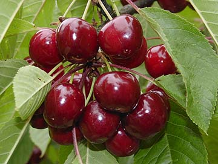
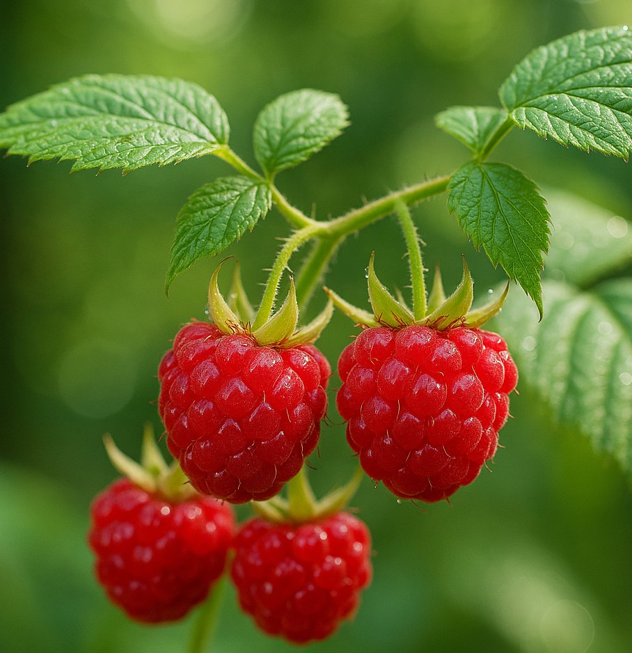

Jádroviny
Šlechtíme jabloně a hrušně s důrazem na chuť, skladovatelnost a rezistenci k strupovitosti a padlí. Udržujeme genovou banku českých a evropských odrůd.
V Polabí u řeky Labe se věnujeme výzkumu, udržovacímu šlechtění ovocných druhů a produkci kvalitního výchozího materiálu pro sadaře i drobné pěstitele.
Litoměřická stanice navazuje na dlouhou tradici zahradnického výzkumu. Díky příznivému mikroklimatu Českého středohoří zde testujeme a udržujeme bohatý sortiment ovoce – především jabloně, hrušně, třešně a meruňky.
Moderní pokusné sady, školky podnoží i matečné porosty poskytují spolehlivé zázemí pro vývoj nových odrůd i zachování cenného genetického materiálu.

„Litoměřice patří k nejúrodnějším oblastem v České republice. Stanice využívá místní podmínky pro rozvoj ovocného šlechtění, zachování genofondu a adaptaci odrůd na klimatickou změnu.“
Odborný tým kombinujících klasické metody a moderní genetické nástroje připravuje odrůdy se stabilním výnosem, vysokou kvalitou plodů a odolností vůči chorobám. Důraz klademe na regionální adaptabilitu a podporu udržitelné produkce ovoce.
Šlechtíme jabloně a hrušně s důrazem na chuť, skladovatelnost a rezistenci k strupovitosti a padlí. Udržujeme genovou banku českých a evropských odrůd.
Vytváříme odrůdy třešní, višní, meruněk a broskvoní vhodné pro intenzivní výsadby i extenzivní sady s nižší potřebou chemické ochrany.
Spravujeme genovou banku a navazující pokusy, které pomáhají zachovat cenný genetický materiál a rychle ověřit nové odrůdy v podmínkách regionu.
Stanice zavádí principy regenerativního zemědělství, které podporují obnovu půdního zdraví, biodiverzitu a zadržování vody. V sadech pracujeme s pestrými pokryvnými porosty, kompostovými výluhy i minimalizací zpracování půdy.
Regenerativní přístup propojuje výzkum se zemědělskou praxí: měříme vlhkost a teplotu půdy, sledujeme aktivitu půdních organismů a sdílíme zkušenosti s farmáři, kteří chtějí hospodařit šetrně a ekonomicky.
Výsledkem jsou odolnější porosty, nižší potřeba syntetických vstupů a vyšší odolnost vůči extrémům počasí. Stanice funguje jako regionální demonstrační farma a centrum vzdělávání pro regenerativní ovocnářství.

Organizujeme semináře pro sadaře, školkaře i veřejnost. Sdílíme know-how k výsadbě, řezu, ochraně rostlin a regenerativním postupům.
Nabízíme zázemí pro poloprovozní pokusy firem a výzkumných institucí, včetně laboratorních analýz a dlouhodobého monitoringu.
Spolupracujeme s městem Litoměřice, středními školami i místními farmáři na rozvoji krajiny, vzdělávání a ochraně genofondu ovocných dřevin.
Šlechtitelská stanice Litoměřice
SEMPRA PRAHA a.s.
Želetická 123, 412 01 Litoměřice
Aktuální kontaktní údaje a provozní dobu naleznete na oficiálních stránkách společnosti nebo po domluvě s centrálou SEMPRA PRAHA a.s.
Areál stanice se nachází na severním okraji Litoměřic v blízkosti sjezdu z dálnice D8. Parkování je možné přímo v areálu. Prosíme návštěvníky, aby se předem objednali.